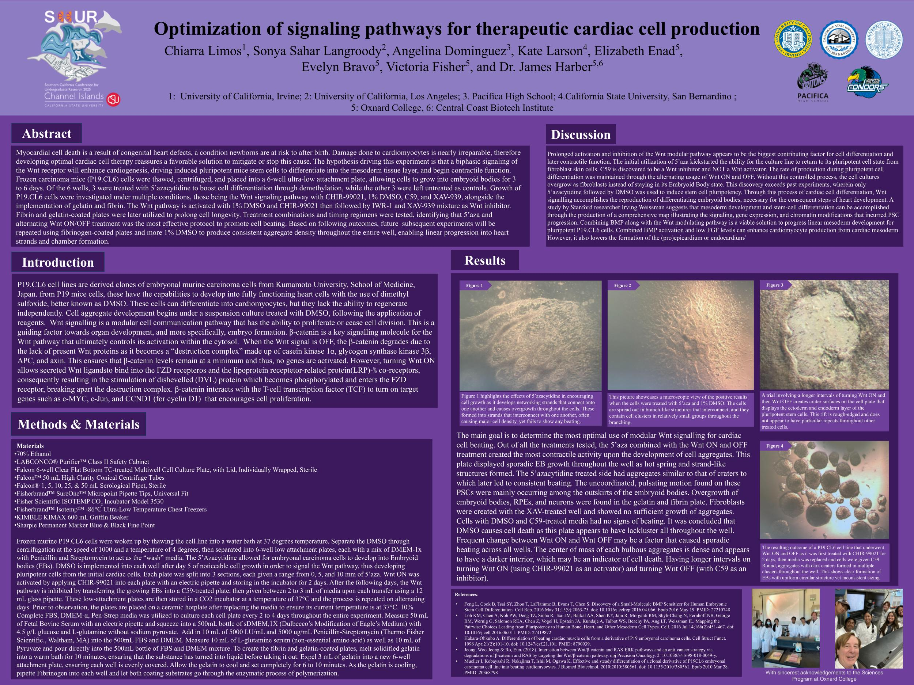

Abstract
Congenital heart defects can cause irreversible damage to cardiomyocytes, motivating the search for reliable ways to regenerate functional heart tissue. This project tested whether toggling the Wnt signaling pathway on and off in a controlled sequence could push pluripotent P19.CL6 mouse stem cells toward the mesoderm lineage and into a contractile, beating state.
Frozen P19.CL6 cells were thawed and grown into embryoid bodies across six wells, three of which were treated with 5'-azacytidine to encourage differentiation while the rest served as controls. Cells were then exposed to a rotating set of conditions, including CHIR-99021 and DMSO to activate Wnt signaling followed by C59 and XAV-939 to inhibit it, on gelatin- and fibrin-coated plates. Alternating Wnt activation and inhibition, paired with 5'-aza treatment, produced the most consistent beating activity, pointing toward fibrinogen-coated plates and increased DMSO exposure as promising directions for future trials.
Introduction
P19.CL6 cells are a clonal derivative of mouse embryonal carcinoma cells that can be pushed toward a cardiomyocyte fate using DMSO, though they cannot regenerate on their own once mature. Differentiation begins as cells are cultured in suspension and exposed to treatment reagents, with Wnt signaling acting as the master switch controlling whether cells keep dividing or begin to specialize.
The key regulator of this pathway is beta-catenin. When Wnt signaling is off, beta-catenin is broken down by a destruction complex and target genes stay silent. When Wnt is turned on, that destruction complex is disabled, beta-catenin accumulates, and it partners with transcription factors to switch on genes that drive cell proliferation and, eventually, differentiation into cardiac tissue.
Methods & Materials
Frozen P19.CL6 cells were thawed in a 37°C water bath, centrifuged to remove residual DMSO, and distributed across six-well ultra-low attachment plates in a washing medium. 5'-azacytidine was introduced to guide embryonal carcinoma cells into embryoid bodies, with DMSO added once growth was visible to activate the Wnt pathway. Each plate was further divided into sections receiving different 5'-aza concentrations.
Wnt activation was driven by CHIR-99021 over a two-day incubation period, after which growing embryoid bodies were transferred to C59-treated plates to inhibit the pathway, with this cycle repeated on alternating days. Cells were maintained in a CO₂ incubator at 37°C throughout, with fresh growth media and gelatin/fibrin-coated plates prepared to extend cell longevity between observations.
Results
The central goal was identifying which combination of Wnt modulation would produce the most beating activity. Across all conditions tested, the combination of 5'-aza with alternating Wnt activation and inhibition produced the strongest contractile response, with embryoid bodies forming sporadic, crater-like and strand-like structures that eventually beat consistently.
Plates treated only with DMSO and the Wnt inhibitor C59 showed no beating and were concluded to have induced cell death, while wells with longer intervals between switching Wnt on and off tended to form more uniform, round aggregates. Overgrowth of embryoid bodies, retinal pigmented epithelial cells, and neurons appeared in the gelatin- and fibrin-coated wells, while the XAV-939 treated wells showed little aggregate growth at all.
Discussion & Conclusion
The results suggest that the timing of Wnt pathway activation and inhibition, not just the presence of the right reagents, is the biggest driver of successful cardiac differentiation. Without a controlled on/off rhythm, cell cultures tended to overgrow as fibroblasts rather than progressing through the embryoid body stage needed for cardiomyocyte formation.
Looking ahead, the team identified fibrinogen-coated plates and increased DMSO concentration as promising adjustments to produce more consistent cell density and support a cleaner progression into heart-like tissue structures. The findings also point toward combining BMP signaling with Wnt modulation as a possible way to further enhance cardiomyocyte yield from cardiac mesoderm.
Selected References
- Feng L, Cook B, Tsai SY, Zhou T, LaFlamme B, Evans T, Chen S. Discovery of a Small-Molecule BMP Sensitizer for Human Embryonic Stem Cell Differentiation. Cell Rep. 2016.
- Loh KM, Chen A, Koh PW, et al. Mapping the Pairwise Choices Leading from Pluripotency to Human Bone, Heart, and Other Mesoderm Cell Types. Cell. 2016.
- Habara-Ohkubo A. Differentiation of beating cardiac muscle cells from a derivative of P19 embryonal carcinoma cells. Cell Struct Funct. 1996.
- Jeong WJ, Ro E. Interaction between Wnt/β-catenin and RAS-ERK pathways and an anti-cancer strategy via degradation of β-catenin and RAS. npj Precision Oncology. 2018.
- Mueller I, Kobayashi R, Nakajima T, Ishii M, Ogawa K. Effective and steady differentiation of a clonal derivative of P19CL6 embryonal carcinoma cell line into beating cardiomyocytes. J Biomed Biotechnol. 2010.